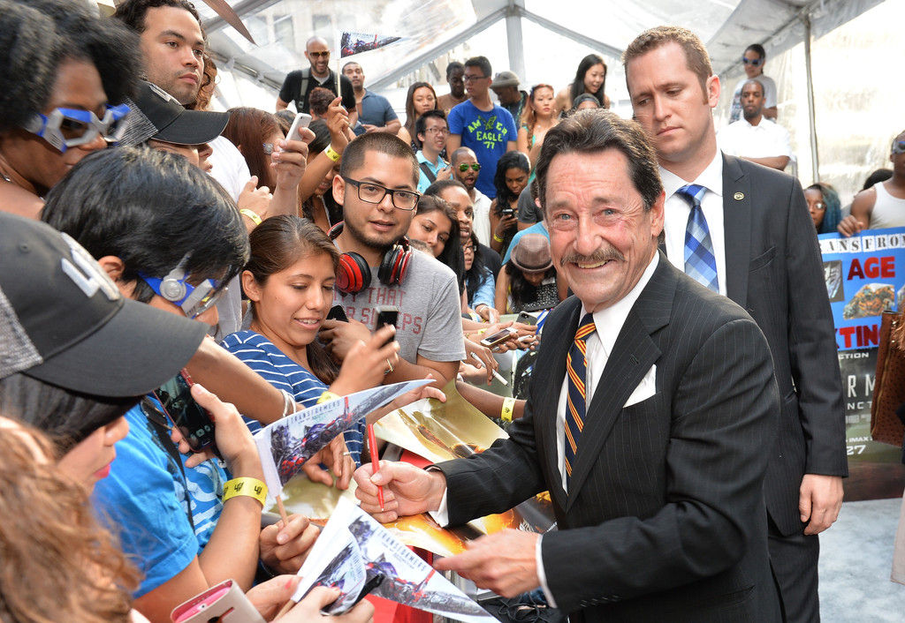

About Tracy and Tom's Travel Agency
Tracy and Tom's Travel Agency is a family-owned business that was founded in 1995 by Tracey and Tom Smith. The company has grown from a small storefront travel agency to a thriving online business that serves customers all over the world. Tracy and Tom's Travel Agency prides itself on providing personalized service and expert advice to help customers plan the perfect trip.
Meet Our Top Executives
-
Tom Smith - CEO
Tom is the co-founder and CEO of Tracy and Tom's Travel Agency. He has over 30 years of experience in the travel industry and is an expert in creating customized travel itineraries. John's passion for travel is contagious, and he loves nothing more than helping customers plan their dream vacations.
-
Tracey Smith - CFO

Tracey is the co-founder and CFO of Tracy and Tom's Travel Agency. She has a background in finance and is responsible for managing the company's finances and ensuring that it operates efficiently. Tracey is also a world traveler and enjoys discovering new destinations and cultures.
-
Bob Johnson - COO
Bob is the COO of Tracy and Tom's Travel Agency. He oversees the company's day-to-day operations and ensures that everything runs smoothly. Bob has a degree in hospitality and tourism management and has worked in the travel industry for over 20 years. He loves working with customers and helping them plan their ideal trips.
Supporting Team
-
Emily Rodriguez - Travel Advisor

Emily is a travel advisor at Tracy and Tom's Travel Agency. She has a degree in international relations and a passion for exploring new cultures. Emily's favorite destinations include Japan, Italy, and Thailand.
-
Mark Chen - Marketing Manager
Mark is the marketing manager at Tracy and Tom's Travel Agency. He has a background in marketing and is responsible for promoting the company's services and products. Mark loves to travel and has visited over 30 countries.
-
Olivia Lee - Customer Service Representative

Olivia is a customer service representative at Tracy and Tom's Travel Agency. She has a degree in hospitality and has worked in the travel industry for over 5 years. Olivia enjoys helping customers with their travel needs and ensuring that they have a positive experience with the company.
-
Sam Patel - IT Manager
Sam is the IT manager at Tracy and Tom's Travel Agency. He has a background in computer science and is responsible for managing the company's technology infrastructure. Sam loves to travel and has visited over 20 countries.